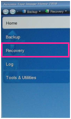

In Acronis click on “Manage and Restore”. This will list you all available backups:

If you are restoring an image from an external memory, click browse for backup to select the image from your memory. In some cases the Secure Zone image is not listed here automatically. You can rather click the „Refresh Backups“ button or recall the image out of the Secure Zone again if necessary.
Select your drive and image and click OK:
If you are restoring from Acronis Secure Zone do the same as described above, your Secure Zone is listed in the location tree as well. Select the file and click OK.
Now you see the wanted image listed.
A right click with the mouse on the image will give you several options.
Choose recover to proceed:
If you are recovering from a secure zone file, then you will be prompted with a new window:
Enter: “12345” as the password and proceed by clicking on Ok.
The next option is to choose whether to restore the whole partition / drive that may be stored in the file or only some files of it. In our case you may only want to restore the whole disk / partitions:
If your image does only contain one partition, you may see a picture like this in the next step. You should only choose to restore the partition, not the master boot record:
If you restore a complete hard disk, make sure that you select the whole disk including the Acronis Secure Zone:
Make sure to choose the right location (e.g. a secure zone file has always be recovered to System drive C:). If it is not the wanted one click on new location and choose the right place.
If you want to restore a complete disk, make sure to choose the right hard disk if your VPU does have more than one hard disk drives. Also check the right connection and naming of any external connected hard drive. If you are unsure, please contact MA Lighting to avoid any damage of your system.
In the next step you will see an overview of what you will restore. Click on proceed and start the recovery of the image: